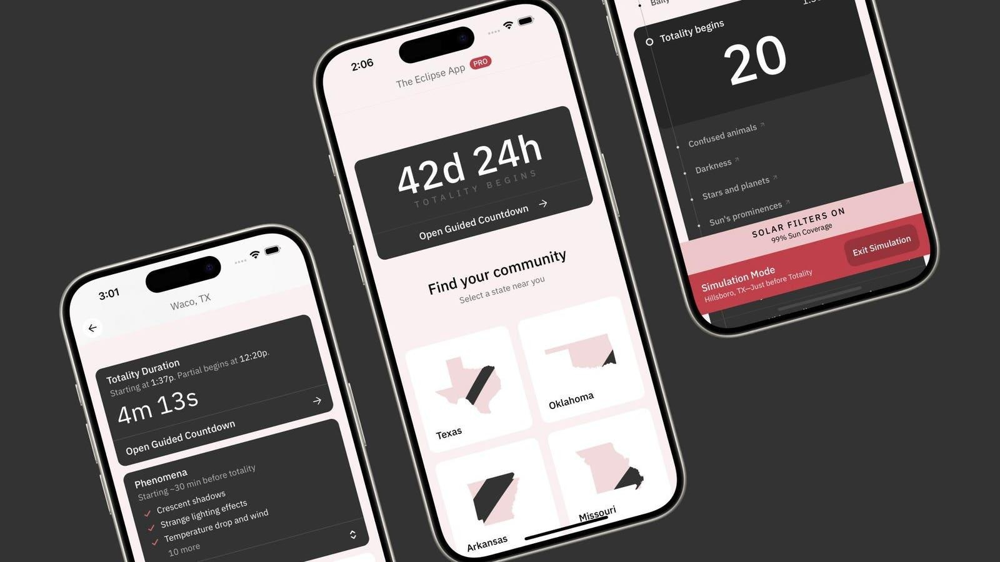

This Is The Only New App You Need For April’s Total Solar EclipseA new smartphone app has been released that promises to make eclipse chasing on April 8 much easier. Based on The Eclipse Company’s excellent online interactive map, the new app—now available for download on both the Apple App Store and the Google Play Store—will provide eclipse chasers in the U.S. states with three things that no other single app offers: - Real-time weather updates and cloud forecasts for the hour that totality occurs for the user’s location (if in the path of totality). - A countdown timer with a vibration alert to let you know when it’s safe to remove your solar eclipse glasses. - Detailed information about local eclipse events. Free Features Not every feature is free. Arguably, the two most valuable features on April 8—cloud forecasts and the guided countdown—mean upgrading to the “Pro” version (TBC). However, the following features are free: - Explore communities, events, and local viewing sites. - Totality times and phenomena details at each location. - Historical cloud cover data. - Save locations for quick access. - Subscribe to partner bulletins. Community Data Although providing weather and location data on April 8 could prove pivotal for some eclipse chasers using the app, a significant dimension of the app is how it works with communities in the path of totality. Scan around the app, and it’s possible to find events, parks and viewing sites across the path of totality. “We believe we have the best community data on the planet,” said Stephen Watkins, co-founder of The Eclipse Company, in a press release. “We help you avoid cloudy skies and tell you when totality occurs exactly where you are.” Spectacular Event “We wanted to build an app that brings clarity around such a spectacular event,” said Watkins. He said the app—developed in partnership with The Planetary Society—gives people only what they need. “We’ve built an app that’s there when you need it and gets out of the way when it matters most,” said Watkins. “We think people are going to love it.” For the very latest on the total solar eclipse—including travel and lodging options—check my main feed for new articles each day. Wishing you clear skies and wide eyes. |
 |